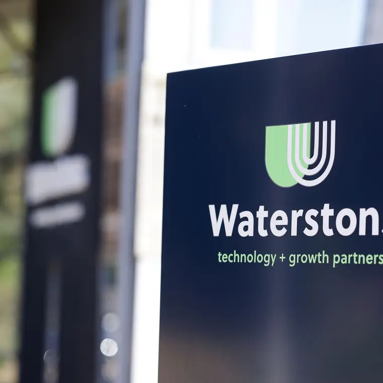
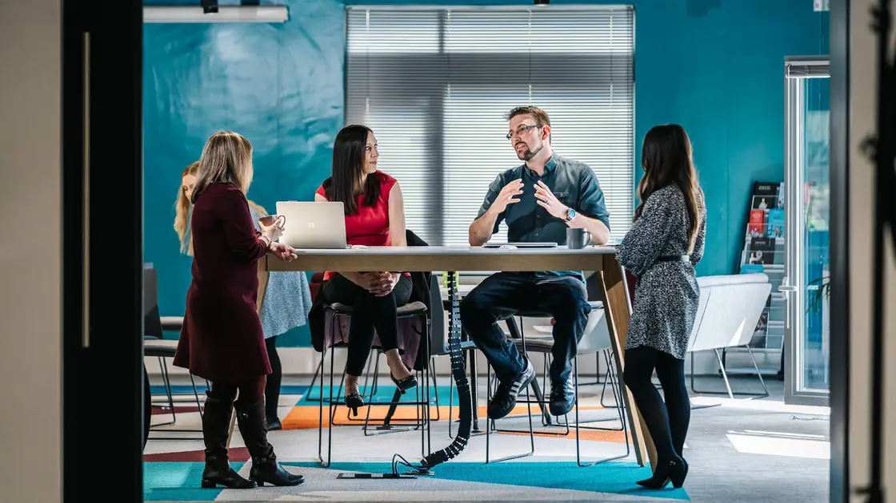

06
Our story
Founded as a family business. Still behaves like one.
We have been around since the mid nineties, and that sense of family still runs through the place. Our ethos fits in five words: we will do whatever it takes.
We are obsessive about hiring, because we are only as good as the people we put in front of you.



07
Personality carried by a real photograph and a click to load film, so the culture lands without a single autoplaying file slowing the page.